Explore and Plot by Shapefile Attributes
Authors
Joseph Stachelek, Leah A. Wasser, Megan A. Jones
Overview
Teaching: 10 min
Exercises: 0 minQuestions
How can I view the attributes of a spatial object?
Objectives
Be able to query attributes of a spatial object.
Be able to subset spatial objects using specific attribute values.
Know how to plot a shapefile, colored by unique attribute values.
Things You’ll Need To Complete This Tutorial
R Skill Level: Intermediate - you’ve got the basics of
Rdown. You will need the most current version ofRand, preferably,RStudioloaded on your computer to complete this tutorial.Install R Packages
- raster:
install.packages("raster")- sf:
install.packages("sf")More on Packages in R - Adapted from Software Carpentry.
Download Data
This tutorial explains what shapefile attributes are and how to work with
shapefile attributes in R. It also covers how to identify and query shapefile
attributes, as well as subset shapefiles by specific attribute values.
Finally, we will review how to plot a shapefile according to a set of attribute
values.
Shapefile Metadata & Attributes
When we import a shapefile into R, the st_read() function automatically
stores metadata and attributes associated with the file.
Load the Data
To work with vector data in R, we can use the sf package. The raster
package also allows us to explore metadata using similar commands for both
raster and vector files.
We will import three shapefiles. The first is our AOI or area of
interest boundary polygon that we worked with in
Open and Plot Shapefiles in R.
The second is a shapefile containing the location of roads and trails within the
field site. The third is a file containing the Fisher tower location.
If you completed the Open and Plot Shapefiles in R tutorial, you can skip this code.
# load packages
# sf: for vector work
library(sf)
Linking to GEOS 3.5.0, GDAL 2.2.2, proj.4 4.8.0
# raster: for raster metadata/attributes
library(raster)
Loading required package: sp
# set working directory to data folder
# setwd("pathToDirHere")
# Import a polygon shapefile
aoi_boundary_HARV <- st_read("data/NEON-DS-Site-Layout-Files/HARV/HarClip_UTMZ18.shp")
Reading layer `HarClip_UTMZ18' from data source `/home/travis/build/datacarpentry/r-raster-vector-geospatial/_episodes_rmd/data/NEON-DS-Site-Layout-Files/HARV/HarClip_UTMZ18.shp' using driver `ESRI Shapefile'
Simple feature collection with 1 feature and 1 field
geometry type: POLYGON
dimension: XY
bbox: xmin: 732128 ymin: 4713209 xmax: 732251.1 ymax: 4713359
epsg (SRID): 32618
proj4string: +proj=utm +zone=18 +datum=WGS84 +units=m +no_defs
# Import a line shapefile
lines_HARV <- st_read("data/NEON-DS-Site-Layout-Files/HARV/HARV_roads.shp")
Reading layer `HARV_roads' from data source `/home/travis/build/datacarpentry/r-raster-vector-geospatial/_episodes_rmd/data/NEON-DS-Site-Layout-Files/HARV/HARV_roads.shp' using driver `ESRI Shapefile'
Simple feature collection with 13 features and 15 fields
geometry type: MULTILINESTRING
dimension: XY
bbox: xmin: 730741.2 ymin: 4711942 xmax: 733295.5 ymax: 4714260
epsg (SRID): 32618
proj4string: +proj=utm +zone=18 +datum=WGS84 +units=m +no_defs
# Import a point shapefile
point_HARV <- st_read("data/NEON-DS-Site-Layout-Files/HARV/HARVtower_UTM18N.shp")
Reading layer `HARVtower_UTM18N' from data source `/home/travis/build/datacarpentry/r-raster-vector-geospatial/_episodes_rmd/data/NEON-DS-Site-Layout-Files/HARV/HARVtower_UTM18N.shp' using driver `ESRI Shapefile'
Simple feature collection with 1 feature and 14 fields
geometry type: POINT
dimension: XY
bbox: xmin: 732183.2 ymin: 4713265 xmax: 732183.2 ymax: 4713265
epsg (SRID): 32618
proj4string: +proj=utm +zone=18 +datum=WGS84 +units=m +no_defs
Query Shapefile Metadata
Remember, as covered in
Open and Plot Shapefiles in R,
we can view metadata associated with an R object using:
st_geometry_type()- Describes the type of vector data stored in the object.nrow()- How many features are in this spatial object?- object
st_bbox()- The spatial extent (geographic area covered by) features in the object. - coordinate reference system (
st_crs()) - The spatial projection that the data are in.
Let’s explore the metadata for our point_HARV object.
# view geometry type
st_geometry_type(point_HARV)
[1] POINT
18 Levels: GEOMETRY POINT LINESTRING POLYGON ... TRIANGLE
# x= isn't actually needed; it just specifies which object
# view features count
nrow(point_HARV)
[1] 1
# view crs - note - this only works with the raster package loaded
st_crs(point_HARV)
Coordinate Reference System:
EPSG: 32618
proj4string: "+proj=utm +zone=18 +datum=WGS84 +units=m +no_defs"
# view extent- note - this only works with the raster package loaded
st_bbox(point_HARV)
xmin ymin xmax ymax
732183.2 4713265.0 732183.2 4713265.0
# view metadata summary
point_HARV
Simple feature collection with 1 feature and 14 fields
geometry type: POINT
dimension: XY
bbox: xmin: 732183.2 ymin: 4713265 xmax: 732183.2 ymax: 4713265
epsg (SRID): 32618
proj4string: +proj=utm +zone=18 +datum=WGS84 +units=m +no_defs
Un_ID Domain DomainName SiteName Type Sub_Type Lat
1 A 1 Northeast Harvard Forest Core Advanced Tower 42.5369
Long Zone Easting Northing Ownership County
1 -72.17266 18 732183.2 4713265 Harvard University, LTER Worcester
annotation geometry
1 C1 POINT (732183.2 4713265)
About Shapefile Attributes
Shapefiles often contain an associated database or spreadsheet of values called attributes that describe the vector features in the shapefile. You can think of this like a spreadsheet with rows and columns. Each column in the spreadsheet is an individual attribute that describes an object. Shapefile attributes include measurements that correspond to the geometry of the shapefile features.
For example, the HARV_Roads shapefile (lines_HARV object) contains an
attribute called TYPE. Each line in the shapefile has an associated TYPE
which describes the type of road (woods road, footpath, boardwalk, or
stone wall).

We can look at all of the associated data attributes by printing the contents of the sf object. We can use the ncol function to count the number of attributes associated with a spatial object too.
# how many attributes are in our vector data object?
ncol(lines_HARV)
[1] 16
We can view the individual name of each attribute using the
names method in R. We could also view just the first 6 rows
of attribute values using head(lines_HARV).
Let’s give it a try.
# view just the attribute names for the lines_HARV spatial object
names(lines_HARV)
[1] "OBJECTID_1" "OBJECTID" "TYPE" "NOTES" "MISCNOTES"
[6] "RULEID" "MAPLABEL" "SHAPE_LENG" "LABEL" "BIKEHORSE"
[11] "RESVEHICLE" "RECMAP" "Shape_Le_1" "ResVehic_1" "BicyclesHo"
[16] "geometry"
# just view the attributes & first 6 attribute values of the data
head(lines_HARV)
Simple feature collection with 6 features and 15 fields
geometry type: MULTILINESTRING
dimension: XY
bbox: xmin: 730741.2 ymin: 4712685 xmax: 732232.3 ymax: 4713726
epsg (SRID): 32618
proj4string: +proj=utm +zone=18 +datum=WGS84 +units=m +no_defs
OBJECTID_1 OBJECTID TYPE NOTES MISCNOTES RULEID
1 14 48 woods road Locust Opening Rd <NA> 5
2 40 91 footpath <NA> <NA> 6
3 41 106 footpath <NA> <NA> 6
4 211 279 stone wall <NA> <NA> 1
5 212 280 stone wall <NA> <NA> 1
6 213 281 stone wall <NA> <NA> 1
MAPLABEL SHAPE_LENG LABEL BIKEHORSE RESVEHICLE
1 Locust Opening Rd 1297.35706 Locust Opening Rd Y R1
2 <NA> 146.29984 <NA> Y R1
3 <NA> 676.71804 <NA> Y R2
4 <NA> 231.78957 <NA> <NA> <NA>
5 <NA> 45.50864 <NA> <NA> <NA>
6 <NA> 198.39043 <NA> <NA> <NA>
RECMAP Shape_Le_1 ResVehic_1
1 Y 1297.10617 R1 - All Research Vehicles Allowed
2 Y 146.29983 R1 - All Research Vehicles Allowed
3 Y 676.71807 R2 - 4WD/High Clearance Vehicles Only
4 <NA> 231.78962 <NA>
5 <NA> 45.50859 <NA>
6 <NA> 198.39041 <NA>
BicyclesHo geometry
1 Bicycles and Horses Allowed MULTILINESTRING ((730819.2 ...
2 Bicycles and Horses Allowed MULTILINESTRING ((732040.2 ...
3 Bicycles and Horses Allowed MULTILINESTRING ((732057 47...
4 <NA> MULTILINESTRING ((731903.6 ...
5 <NA> MULTILINESTRING ((732039.1 ...
6 <NA> MULTILINESTRING ((732056.2 ...
Challenge: Attributes for Different Spatial Classes
Explore the attributes associated with the
point_HARVandaoi_boundary_HARVspatial objects.
- How many attributes do each have?
- Who owns the site in the
point_HARVdata object?Which of the following is NOT an attribute of the
pointdata object?A) Latitude B) County C) Country
Answers
# 1 ncol(point_HARV) #14 attributes[1] 15ncol(aoi_boundary_HARV) #1 attribute[1] 2# 2 head(point_HARV) #Harvard University, LTERSimple feature collection with 1 feature and 14 fields geometry type: POINT dimension: XY bbox: xmin: 732183.2 ymin: 4713265 xmax: 732183.2 ymax: 4713265 epsg (SRID): 32618 proj4string: +proj=utm +zone=18 +datum=WGS84 +units=m +no_defs Un_ID Domain DomainName SiteName Type Sub_Type Lat 1 A 1 Northeast Harvard Forest Core Advanced Tower 42.5369 Long Zone Easting Northing Ownership County 1 -72.17266 18 732183.2 4713265 Harvard University, LTER Worcester annotation geometry 1 C1 POINT (732183.2 4713265)# 3 names(point_HARV) # C Country[1] "Un_ID" "Domain" "DomainName" "SiteName" "Type" [6] "Sub_Type" "Lat" "Long" "Zone" "Easting" [11] "Northing" "Ownership" "County" "annotation" "geometry"
Explore Values within One Attribute
We can explore individual values stored within a particular attribute.
Again, comparing attributes to a spreadsheet or a data.frame, this is similar
to exploring values in a column. We can do this using the $ and the name of
the attribute: objectName$attributeName.
# view all attributes in the lines shapefile within the TYPE field
lines_HARV$TYPE
[1] woods road footpath footpath stone wall stone wall stone wall
[7] stone wall stone wall stone wall boardwalk woods road woods road
[13] woods road
Levels: boardwalk footpath stone wall woods road
# view unique values within the "TYPE" attributes
levels(lines_HARV$TYPE)
[1] "boardwalk" "footpath" "stone wall" "woods road"
Notice that two of our TYPE attribute values consist of two separate words: stone wall and woods road. There are really four unique TYPE values, not six TYPE values.
Subset Shapefiles
We can use the objectName$attributeName syntax to select a subset of features
from a spatial object in R.
# select features that are of TYPE "footpath"
# could put this code into other function to only have that function work on
# "footpath" lines
lines_HARV[lines_HARV$TYPE == "footpath",]
Simple feature collection with 2 features and 15 fields
geometry type: MULTILINESTRING
dimension: XY
bbox: xmin: 731954.5 ymin: 4713131 xmax: 732232.3 ymax: 4713726
epsg (SRID): 32618
proj4string: +proj=utm +zone=18 +datum=WGS84 +units=m +no_defs
OBJECTID_1 OBJECTID TYPE NOTES MISCNOTES RULEID MAPLABEL SHAPE_LENG
2 40 91 footpath <NA> <NA> 6 <NA> 146.2998
3 41 106 footpath <NA> <NA> 6 <NA> 676.7180
LABEL BIKEHORSE RESVEHICLE RECMAP Shape_Le_1
2 <NA> Y R1 Y 146.2998
3 <NA> Y R2 Y 676.7181
ResVehic_1 BicyclesHo
2 R1 - All Research Vehicles Allowed Bicycles and Horses Allowed
3 R2 - 4WD/High Clearance Vehicles Only Bicycles and Horses Allowed
geometry
2 MULTILINESTRING ((732040.2 ...
3 MULTILINESTRING ((732057 47...
# save an object with only footpath lines
footpath_HARV <- lines_HARV[lines_HARV$TYPE == "footpath",]
footpath_HARV
Simple feature collection with 2 features and 15 fields
geometry type: MULTILINESTRING
dimension: XY
bbox: xmin: 731954.5 ymin: 4713131 xmax: 732232.3 ymax: 4713726
epsg (SRID): 32618
proj4string: +proj=utm +zone=18 +datum=WGS84 +units=m +no_defs
OBJECTID_1 OBJECTID TYPE NOTES MISCNOTES RULEID MAPLABEL SHAPE_LENG
2 40 91 footpath <NA> <NA> 6 <NA> 146.2998
3 41 106 footpath <NA> <NA> 6 <NA> 676.7180
LABEL BIKEHORSE RESVEHICLE RECMAP Shape_Le_1
2 <NA> Y R1 Y 146.2998
3 <NA> Y R2 Y 676.7181
ResVehic_1 BicyclesHo
2 R1 - All Research Vehicles Allowed Bicycles and Horses Allowed
3 R2 - 4WD/High Clearance Vehicles Only Bicycles and Horses Allowed
geometry
2 MULTILINESTRING ((732040.2 ...
3 MULTILINESTRING ((732057 47...
# how many features are in our new object
nrow(footpath_HARV)
[1] 2
Our subsetting operation reduces the features count from 13 to 2. This means
that only two feature lines in our spatial object have the attribute
“TYPE=footpath”.
We can plot our subsetted shapefiles.
# plot just footpaths
plot(footpath_HARV$geometry,
lwd = 6,
main = "NEON Harvard Forest Field Site\n Footpaths")
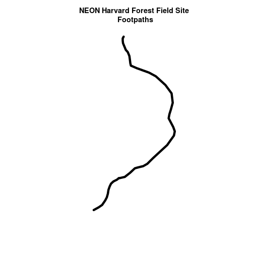
Interesting. Above, it appeared as if we had 2 features in our footpaths subset. Why does the plot look like there is only one feature?
Let’s adjust the colors used in our plot. If we have 2 features in our vector
object, we can plot each using a unique color by assigning unique colors (col=)
to our features. We use the syntax
col = "c("colorOne", "colorTwo")
to do this.
# plot just footpaths
plot(footpath_HARV$geometry,
col = c("green", "blue"), # set color for each feature
lwd = 6,
main = "NEON Harvard Forest Field Site\n Footpaths \n Feature one = blue, Feature two= green")
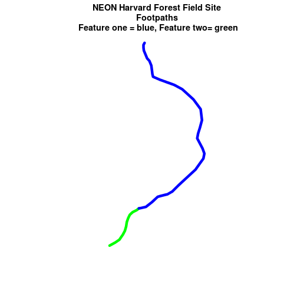
Now, we see that there are in fact two features in our plot!
Challenge: Subset Spatial Line Objects
Subset out all:
boardwalkfrom the lines layer and plot it.stone wallfeatures from the lines layer and plot it.For each plot, color each feature using a unique color.
Answers
# save an object with only boardwalk lines boardwalk_HARV<-lines_HARV[lines_HARV$TYPE == "boardwalk",] boardwalk_HARVSimple feature collection with 1 feature and 15 fields geometry type: MULTILINESTRING dimension: XY bbox: xmin: 732153.8 ymin: 4713258 xmax: 732189.6 ymax: 4713305 epsg (SRID): 32618 proj4string: +proj=utm +zone=18 +datum=WGS84 +units=m +no_defs OBJECTID_1 OBJECTID TYPE NOTES MISCNOTES RULEID MAPLABEL 10 553 674 boardwalk <NA> <NA> 2 <NA> SHAPE_LENG LABEL BIKEHORSE RESVEHICLE RECMAP Shape_Le_1 10 67.43464 <NA> N R3 N 67.43466 ResVehic_1 BicyclesHo 10 R3 - No Vehicles Allowed DO NOT SHOW ON REC MAP geometry 10 MULTILINESTRING ((732153.8 ...# how many features are in our new object nrow(boardwalk_HARV)[1] 1# plot just footpaths plot(boardwalk_HARV$geometry, col = c("green"), # set color for feature lwd = 6, main = "NEON Harvard Forest Field Site\n Boardwalks\n Feature one = blue, Feature two= green")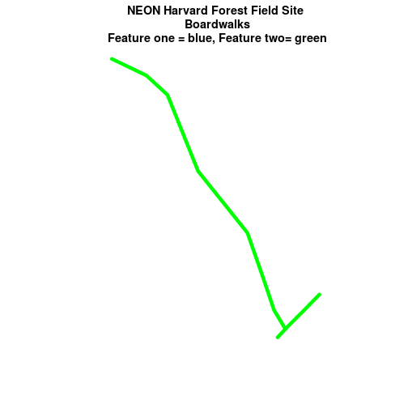
# save an object with only stone wall lines stoneWall_HARV <- lines_HARV[lines_HARV$TYPE == "stone wall",] stoneWall_HARVSimple feature collection with 6 features and 15 fields geometry type: MULTILINESTRING dimension: XY bbox: xmin: 731882.6 ymin: 4713019 xmax: 732258.2 ymax: 4713299 epsg (SRID): 32618 proj4string: +proj=utm +zone=18 +datum=WGS84 +units=m +no_defs OBJECTID_1 OBJECTID TYPE NOTES MISCNOTES RULEID MAPLABEL 4 211 279 stone wall <NA> <NA> 1 <NA> 5 212 280 stone wall <NA> <NA> 1 <NA> 6 213 281 stone wall <NA> <NA> 1 <NA> 7 214 282 stone wall <NA> <NA> 1 <NA> 8 215 283 stone wall <NA> <NA> 1 <NA> 9 216 284 stone wall <NA> <NA> 1 <NA> SHAPE_LENG LABEL BIKEHORSE RESVEHICLE RECMAP Shape_Le_1 ResVehic_1 4 231.78957 <NA> <NA> <NA> <NA> 231.78962 <NA> 5 45.50864 <NA> <NA> <NA> <NA> 45.50859 <NA> 6 198.39043 <NA> <NA> <NA> <NA> 198.39041 <NA> 7 143.19240 <NA> <NA> <NA> <NA> 143.19241 <NA> 8 90.33118 <NA> <NA> <NA> <NA> 90.33114 <NA> 9 35.88146 <NA> <NA> <NA> <NA> 35.88152 <NA> BicyclesHo geometry 4 <NA> MULTILINESTRING ((731903.6 ... 5 <NA> MULTILINESTRING ((732039.1 ... 6 <NA> MULTILINESTRING ((732056.2 ... 7 <NA> MULTILINESTRING ((731964 47... 8 <NA> MULTILINESTRING ((732105.2 ... 9 <NA> MULTILINESTRING ((732222.9 ...# how many features are in our new object? nrow(stoneWall_HARV)[1] 6# plot just footpaths plot(stoneWall_HARV$geometry, col = c("green", "blue", "orange", "brown", "darkgreen", "purple"), # set color for each feature lwd = 6, main = "NEON Harvard Forest Field Site\n Stonewalls\n Each Feature in Different Color")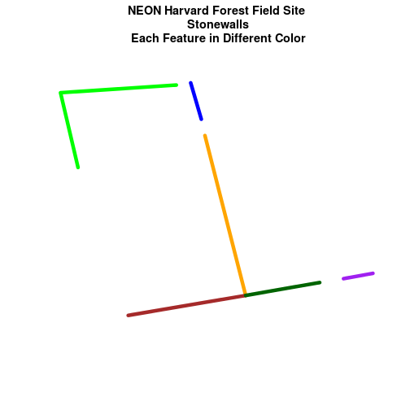
Plot Lines by Attribute Value
To plot vector data with the color determined by a set of attribute values, the attribute values must be class = factor. A factor is similar to a category you can group vector objects by a particular category value for example you can group all lines of TYPE=footpath. However, in R, a factor can also have a determined order.
By default, R will import spatial object attributes as factors.
Data Tip
If our data attribute values are not read in as factors, we can convert the categorical attribute values using
as.factor().
# view the original class of the TYPE column
class(lines_HARV$TYPE)
[1] "factor"
# view levels or categories - note that there are no categories yet in our data!
# the attributes are just read as a list of character elements.
levels(lines_HARV$TYPE)
[1] "boardwalk" "footpath" "stone wall" "woods road"
# Convert the TYPE attribute into a factor
# Only do this IF the data do not import as a factor!
# lines_HARV$TYPE <- as.factor(lines_HARV$TYPE)
# class(lines_HARV$TYPE)
# levels(lines_HARV$TYPE)
# how many features are in each category or level?
summary(lines_HARV$TYPE)
boardwalk footpath stone wall woods road
1 2 6 4
When we use plot(), we can specify the colors to use for each attribute using
the col= element. To ensure that R renders each feature by it’s associated
factor / attribute value, we need to create a vector or colors - one for each
feature, according to it’s associated attribute value / factor value.
To create this vector we can use the following syntax:
c("colorOne", "colorTwo", "colorThree")[object$factor]
Note in the above example we have
- a vector of colors - one for each factor value (unique attribute value)
- the attribute itself (
[object$factor]) of classfactor.
Let’s give this a try.
# Check the class of the attribute - is it a factor?
class(lines_HARV$TYPE)
[1] "factor"
# how many "levels" or unique values does hte factor have?
# view factor values
levels(lines_HARV$TYPE)
[1] "boardwalk" "footpath" "stone wall" "woods road"
# count the number of unique values or levels
length(levels(lines_HARV$TYPE))
[1] 4
# create a color palette of 4 colors - one for each factor level
roadPalette <- c("blue", "green", "grey", "purple")
roadPalette
[1] "blue" "green" "grey" "purple"
# create a vector of colors - one for each feature in our vector object
# according to its attribute value
roadColors <- c("blue", "green", "grey", "purple")[lines_HARV$TYPE]
roadColors
[1] "purple" "green" "green" "grey" "grey" "grey" "grey"
[8] "grey" "grey" "blue" "purple" "purple" "purple"
# plot the lines data, apply a diff color to each factor level)
plot(lines_HARV$geometry,
col=roadColors,
lwd = 3,
main = "NEON Harvard Forest Field Site\n Roads & Trails")
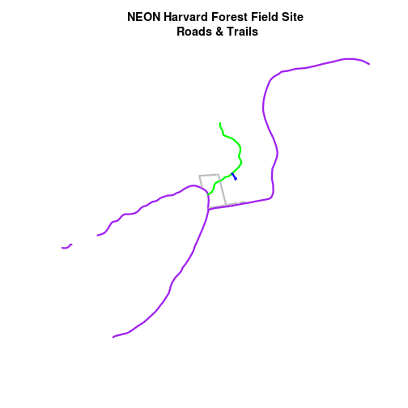
Adjust Line Width
We can also adjust the width of our plot lines using lwd. We can set all lines
to be thicker or thinner using lwd = .
# make all lines thicker
plot(lines_HARV$geometry,
col=roadColors,
main = "NEON Harvard Forest Field Site\n Roads & Trails\n All Lines Thickness=6",
lwd = 6)
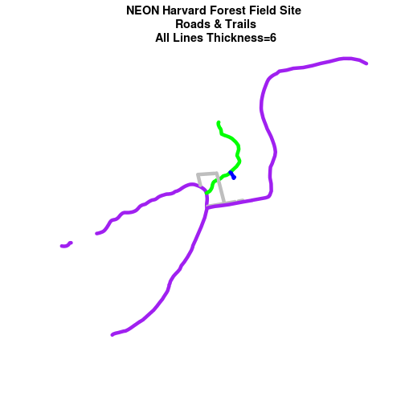
Adjust Line Width by Attribute
If we want a unique line width for each factor level or attribute category in our spatial object, we can use the same syntax that we used for colors, above.
lwd = c("widthOne", "widthTwo", "widthThree")[object$factor]
Note that this requires the attribute to be of class factor. Let’s give it a
try.
class(lines_HARV$TYPE)
[1] "factor"
levels(lines_HARV$TYPE)
[1] "boardwalk" "footpath" "stone wall" "woods road"
# create vector of line widths
lineWidths <- (c(1, 2, 3, 4))[lines_HARV$TYPE]
# adjust line width by level
# in this case, boardwalk (the first level) is the narrowest.
plot(lines_HARV$geometry,
col=roadColors,
main = "NEON Harvard Forest Field Site\n Roads & Trails \n Line width varies by TYPE Attribute Value",
lwd = lineWidths)
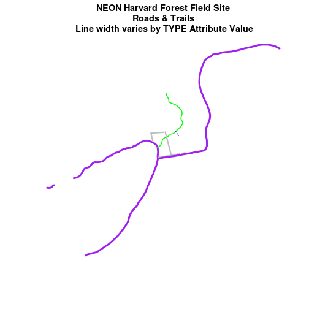
Challenge: Plot Line Width by Attribute
We can customize the width of each line, according to specific attribute value, too. To do this, we create a vector of line width values, and map that vector to the factor levels - using the same syntax that we used above for colors. HINT:
lwd = (vector of line width thicknesses)[spatialObject$factorAttribute]Create a plot of roads using the following line thicknesses:
- woods road lwd = 8
- Boardwalks lwd = 2
- footpath lwd = 4
- stone wall lwd = 3
Answers
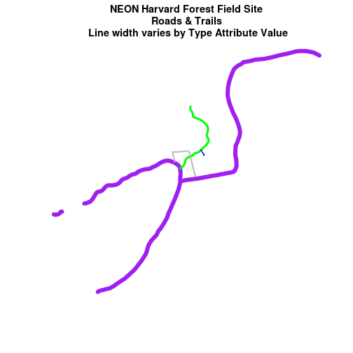
Data Tip
Given we have a factor with 4 levels, we can create an vector of numbers, each of which specifies the thickness of each feature in our
SpatialLinesDataFrameby factor level (category):c(6, 4, 1, 2)[lines_HARV$TYPE]
Add Plot Legend
We can add a legend to our plot too. When we add a legend, we use the following elements to specify labels and colors:
bottomright: We specify the location of our legend by using a default keyword. We could also usetop,topright, etc.levels(objectName$attributeName): Label the legend elements using the categories oflevelsin an attribute (e.g., levels(lines_HARV$TYPE) means use the levels boardwalk, footpath, etc).fill=: apply unique colors to the boxes in our legend.palette()is the default set of colors thatRapplies to all plots.
Let’s add a legend to our plot.
plot(lines_HARV$geometry,
col=roadColors,
main = "NEON Harvard Forest Field Site\n Roads & Trails\n Default Legend")
# we can use the color object that we created above to color the legend objects
roadPalette
[1] "blue" "green" "grey" "purple"
# add a legend to our map
legend("bottomright", # location of legend
legend=levels(lines_HARV$TYPE), # categories or elements to render in
# the legend
fill=roadPalette) # color palette to use to fill objects in legend.
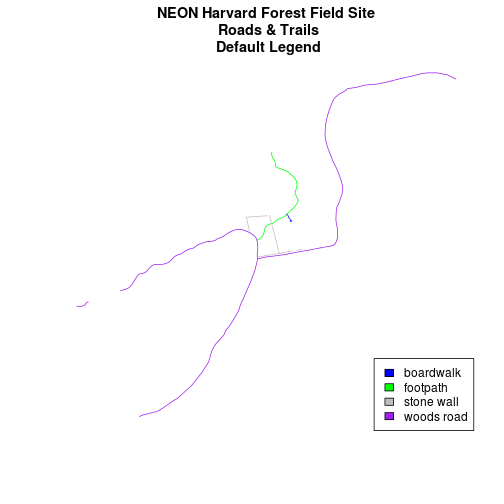
We can tweak the appearance of our legend too.
bty=n: turn off the legend BORDERcex: change the font size
Let’s try it out.
plot(lines_HARV$geometry,
col=roadColors,
main = "NEON Harvard Forest Field Site\n Roads & Trails \n Modified Legend")
# add a legend to our map
legend("bottomright",
legend=levels(lines_HARV$TYPE),
fill=roadPalette,
bty = "n", # turn off the legend border
cex = .8) # decrease the font / legend size
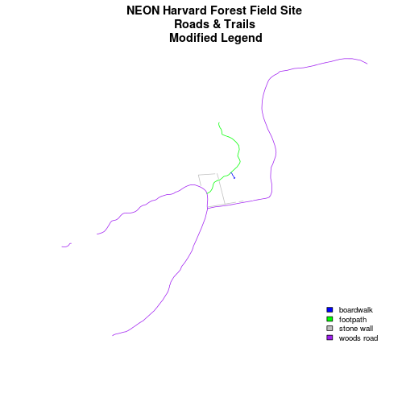
We can modify the colors used to plot our lines by creating a new color vector, directly in the plot code too rather than creating a separate object.
col=(newColors)[lines_HARV$TYPE]
Let’s try it!
# manually set the colors for the plot!
newColors <- c("springgreen", "blue", "magenta", "orange")
newColors
[1] "springgreen" "blue" "magenta" "orange"
# plot using new colors
plot(lines_HARV$geometry,
col=(newColors)[lines_HARV$TYPE],
main = "NEON Harvard Forest Field Site\n Roads & Trails \n Pretty Colors")
# add a legend to our map
legend("bottomright",
levels(lines_HARV$TYPE),
fill=newColors,
bty = "n", cex = .8)
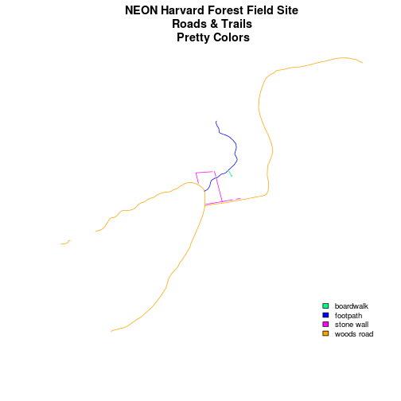
Data Tip
You can modify the defaul R color palette using the palette method. For example
palette(rainbow(6))orpalette(terrain.colors(6)). You can reset the palette colors usingpalette("default")!
Challenge: Plot Lines by Attribute
Create a plot that emphasizes only roads where bicycles and horses are allowed. To emphasize this, make the lines where bicycles are not allowed THINNER than the roads where bicycles are allowed. NOTE: this attribute information is located in the
lines_HARV$BicyclesHoattribute.Be sure to add a title and legend to your map! You might consider a color palette that has all bike/horse-friendly roads displayed in a bright color. All other lines can be grey.
Answers
# view levels levels(lines_HARV$BicyclesHo) # make sure the attribute is of class "Factor" class(lines_HARV$BicyclesHo) # convert to factor if necessary lines_HARV$BicyclesHo <- as.factor(lines_HARV$BicyclesHo) levels(lines_HARV$BicyclesHo) # remove NA values lines_removeNA <- lines_HARV[na.omit(lines_HARV$BicyclesHo),] # count factor levels length(levels(lines_HARV$BicyclesHo)) # set colors so only the allowed roads are magenta # note there are 3 levels so we need 3 colors challengeColors <- c("magenta", "grey", "grey") challengeColors # set line width so the first factor level is thicker than the others lines_HARV$BicyclesHo c(4, 1, 1)[lines_HARV$BicyclesHo] # plot using new colors plot(lines_HARV$geometry, col=(challengeColors)[lines_HARV$BicyclesHo], lwd = c(4, 1, 1)[lines_HARV$BicyclesHo], main = "NEON Harvard Forest Field Site\n Roads Where Bikes and Horses Are Allowed") # add a legend to our map legend("bottomright", levels(lines_HARV$BicyclesHo), fill=challengeColors, bty = "n", # turn off border cex = .8) # adjust font size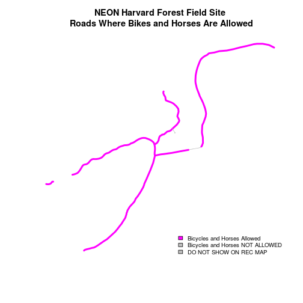
Challenge: Plot Polygon by Attribute
Create a map of the State boundaries in the United States using the data located in your downloaded data folder:
NEON-DS-Site-Layout-Files/US-Boundary-Layers\US-State-Boundaries-Census-2014. Apply a fill color to each state using itsregionvalue. Add a legend.Using the
NEON-DS-Site-Layout-Files/HARV/PlotLocations_HARV.shpshapefile, create a map of study plot locations, with each point colored by the soil type (soilTypeOr). Question: How many different soil types are there at this particular field site?BONUS – modify the field site plot above. Plot each point, using a different symbol. HINT: you can assign the symbol using
pch=value. You can create a vector object of symbols by factor level using the syntax syntax that we used above to create a vector of lines widths and colors:pch = c(15, 17)[lines_HARV$soilTypeOr]. Type?pchto learn more about pch or use google to find a list of pch symbols that you can use inR.Answers
## 1 # Read the shapefile file state_boundary_US <- st_read("data/NEON-DS-Site-Layout-Files/US-Boundary-Layers/US-State-Boundaries-Census-2014.shp")Reading layer `US-State-Boundaries-Census-2014' from data source `/home/travis/build/datacarpentry/r-raster-vector-geospatial/_episodes_rmd/data/NEON-DS-Site-Layout-Files/US-Boundary-Layers/US-State-Boundaries-Census-2014.shp' using driver `ESRI Shapefile' Simple feature collection with 58 features and 10 fields geometry type: MULTIPOLYGON dimension: XYZ bbox: xmin: -124.7258 ymin: 24.49813 xmax: -66.9499 ymax: 49.38436 epsg (SRID): 4326 proj4string: +proj=longlat +datum=WGS84 +no_defs# how many levels? levels(state_boundary_US$region)[1] "Midwest" "Northeast" "Southeast" "Southwest" "West"colors <- c("purple", "springgreen", "yellow", "brown", "grey") colors[1] "purple" "springgreen" "yellow" "brown" "grey"plot(state_boundary_US$geometry, col=(colors)[state_boundary_US$region], main = "Contiguous U.S. State Boundaries \n 50 Colors") # add a legend to our map legend("bottomright", levels(state_boundary_US$region), fill=colors, bty = "n", #turn off border cex = .7) #adjust font size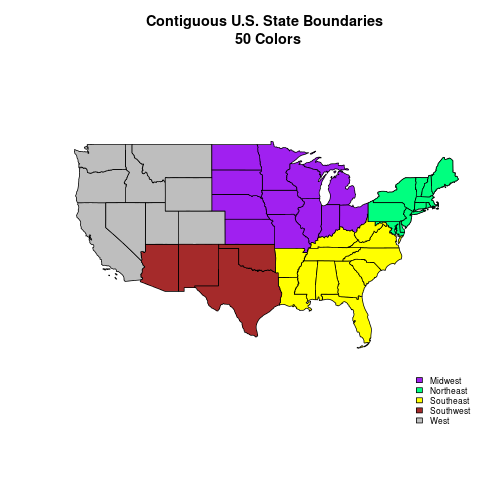
## 2 # open plot locations plotLocations <- st_read("data/NEON-DS-Site-Layout-Files/HARV/PlotLocations_HARV.shp")Reading layer `PlotLocations_HARV' from data source `/home/travis/build/datacarpentry/r-raster-vector-geospatial/_episodes_rmd/data/NEON-DS-Site-Layout-Files/HARV/PlotLocations_HARV.shp' using driver `ESRI Shapefile' Simple feature collection with 21 features and 25 fields geometry type: POINT dimension: XY bbox: xmin: 731405.3 ymin: 4712845 xmax: 732275.3 ymax: 4713846 epsg (SRID): 32618 proj4string: +proj=utm +zone=18 +datum=WGS84 +units=m +no_defs# how many unique soils? Two unique(plotLocations$soilTypeOr)[1] Inceptisols Histosols Levels: Histosols Inceptisols# create new color palette -- topo.colors palette blueGreen <- c("blue","springgreen") blueGreen[1] "blue" "springgreen"# plot the locations plot(plotLocations$geometry, col=(blueGreen)[plotLocations$soilTypeOr], pch=18, main = "NEON Harvard Forest Field Site\n Study Plots by Soil Type\n One Symbol for All Types") # create legend legend("bottomright", legend = c("Intceptisols", "Histosols"), pch=18, col=blueGreen, bty = "n", cex = 1)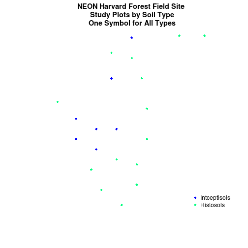
## 3 # create vector of plot symbols plSymbols <- c(15, 17)[plotLocations$soilTypeOr] plSymbols[1] 17 17 17 15 17 15 15 17 17 15 17 17 17 17 15 17 17 17 15 17 15# plot the locations plot(plotLocations$geometry, col=plotLocations$soilTypeOr, pch=plSymbols, main = "NEON Harvard Forest Field Site\n Study Plots by Soil Type\n Unique Symbol for Each Type") # create vector of plot symbols ONLY. Legend needs only the symbols plSymbolsL <- c(15, 17) plSymbolsL[1] 15 17# create legend legend("bottomright", legend = c("Intceptisols", "Histosols"), pch=plSymbolsL, col=palette(), bty = "n", cex = 1)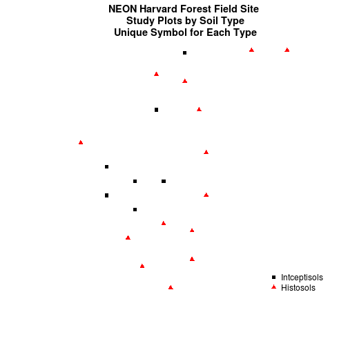
Key Points
Spatial objects in sf are similar to standard data frames except for a geometry list-column.